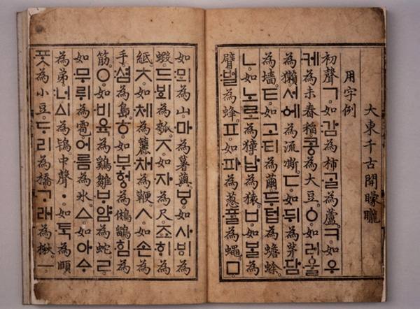

To introduce the fundamental concept of this module, let's first think about a historical example.
Here is a picture of Korean written in the 15th century. You may notice that these pages have a mixture
of Chinese characters and Korean characters. They come from the Hunminjeongeum
manuscript (訓民正音), which is a document with an interesting history.

Before this manuscript, Korean was typically written entirely with Chinese characters. This was kind of
difficult, because Korean has some important grammatical differences with Chinese. For example, Korean nouns are morphologically
marked for case: subjects have a different suffix than objects. English and Chinese don't do this, as we can see from the table
below:
English
Chinese
Korean
Nominative (subjects)
apple
苹果
sagwa-ga 사과가
Accusative (objects)
apple
苹果
sagwa-reul 사과를
(English only does this sort of thing in a limited context: subject and object pronouns have different forms,
e.g. I vs. me, he vs. him, etc. Chinese doesn't do it at all.)
If you were writing Korean in Chinese, you could use the characters 苹果 to represent sagwa
(apple), but what would you use to represent the suffixes ‑ga or ‑reul? Chinese doesn't have characters for
this kind of thing. Hence, writing Korean with Chinese characters was challenging; they had to choose some weird or rare
characters to use for that kind of thing.
As we all know, Korean doesn't look like this anymore. Korean has its own alphabet, which was developed in
the 15th century. The book I showed you above was written to announce this new alphabet and explain how it works.
Nowadays, Koreans generally love their alphabet, and they venerate and adore the king who is claimed to have
invented it (although in reality he probably appointed a team of people to make it). But at the time this book was released,
it was controversial. Some people liked this new alphabet, and some people hated it. Below are two representative quotations
about it. First, from the Hunminjeongeum itself, here's what some guy Chong Inji wrote in praise of the alphabet:
These letters embrace the principles of heaven, earth, and men as well as the mysteries of yin and yang,
and there is nothing they cannot express. With these twenty-eight letters, infinite turns and changes may be explained, they
are simple and yet contain all the essence; they are refined and yet easily communicable. Therefore, a clever man can learn
them in one morning, though a dull man may take ten days to study them. If we
use these letters to explain books, it will be easier to comprehend their meanings. If we use these letters in administering
litigations, it will be easier to ascertain the facts of a case.
(The most famous part of this essay is the "a clever man can learn them in a day" part—and it's true,
I think I'm somewhat clever and I was able to teach myself the whole Korean alphabet during a baseball game I watched in
Seoul—but the part I am more interested in for this module is the underlined part at the end.)
On the other hand, here is what some other guy, Ch'oe Malli, wrote criticizing the alphabet in another book:
Ever since the founding of the dynasty, our court has pursued the policy of respecting the senior state [note:
this means Ming China] and has consistently tried to follow the Chinese system of government. As we share with China at
present the same writing and the same institutions, we are startled to learn of the invention of the Korean script.
Only such peoples as the Mongolians, Tanguts, Jürchens, Japanese,
and Tibetans have their own writings. But this is a matter that involves the barbarians and is unworthy of our concern.
It has been said that the barbarians are transformed only by means of adopting Chinese ways; we have never heard of Chinese
ways being transformed by the barbarians.
Now, it's obvious that this guy was a huge asshole (and also either stupid or willfully ignorant, because if
he has really "never heard of Chinese ways being transformed by the barbarians" then he is apparently forgetting that the
whole Yuan dynasty existed). But there is something that this guy and the previous guy both have in common.
Both of these writers assume that changing Korea's language would change the culture and the way
people think. The guy arguing in favor of the new alphabet said it would change thinking in a good way: it
will make things easier to understand and help people think more clearly. The guy arguing against the new alphabet, on the
other hand, said it would change thinking and culture in a bad way: It would make Korea more "barbaric" (or, at least, it would
not help make Korea more "Chinese"). Neither of them challenges the idea that language might influence thought and culture;
they both accept that idea, and they only disagree on whether it will be a good or bad influence.
The idea that language is intimately linked to our culture and our way of thinking is a popular one; it's
popular today and, as we can see, it was popular over 500 years ago as well. But is it really an idea we should be so quick
to accept? This will be the focus of the module. Continue with the activities below to learn more about this idea.
The idea of a connection between language and thought is interesting, but vague. What exactly does it mean to say "there is
a link between language and thinking"? What aspect of language are we talking about? (As we've seen in previous
modules, language is made up of many different things.) And what is the nature of the link?
As far as I can see it, there are different kinds of claims about language. Some people make claims about vocabulary itself
(i.e., "this language has a word for this concept, and that other language does not; and this difference in vocabulary is
linked to a difference between the cultures"). On the other hand, some people make claims about deeper grammar of the language
(e.g., "this language marks the future tense, and that language does not; and this difference in grammar is linked to a
difference between cultures").
Likewise, there are different kinds of claims about the language-thought link. Some people claim that culture and thought
influence language. Others claim that language influences culture and thought.
Putting those two things together, we get four different types of claims about the potential link between language and thinking.
Below I have shown these in a table, with some representative examples of the kinds of claims people make. (Note that I myself
am not making these claims here; I am listing them as examples of the things other people sometimes claim.)
Claims about vocabulary
Claims about grammar
Claims that thought influences language
"Eskimos care a lot about snow, and thus they have many different words for snow."
"Chinese speakers say '因为X所以Y' ('because X therefore Y'), whereas English speakers say 'X because
Y', and this difference happens because Chinese speakers care more about causes and English speakers care more about
outcomes."
Claims that language influences thought
"Russian speakers have totally different words for 'blue' vs. 'light blue', and therefore they are better than English speakers
at seeing subtle differences between different shades of blue."
"When a language has a future tense, people don't have to think hard about future vs. present [because the grammar already makes
it clear what's future and what's present]. These speakers don't save money as much as other people do, because they don't
think about the future as much."
To briefly preview the rest of this module, a few key points:
Technically we are only really interested in claims that fit in the bottom right of this table (claims that grammar influences
thought). This is the claim made by the theory of linguistic relativity, also known as the Sapir-Whorf hypothesis.
(Specifically, this theory claims that, while language doesn't totally control the way you think, it does influence the way you
think. In other words, if a person's language doesn't have a word for a certain color, that doesn't necessarily mean that person
can't see that color at all [that would be a stupid claim], but they might not see it as vividly, or recognize it as easily,
as people whose language does have a word for that color.)
Almost all the claims in the above table are junk (meaning they are either false, and/or trivial/pointless/uninteresting). We will
see why later.
Before moving on to the next part, choose one of the examples from the table and try to brainstorm some reasons
why it might be junk (or, at least, reasons why you think I would call it junk; if you disagree with me that's fine,
but try to put yourself in my shoes for a minute and figure out why I believe these are junk). Like I mentioned,
"almost" all of these are junk, but one of them is actually a reasonable claim. So be careful which one you pick!